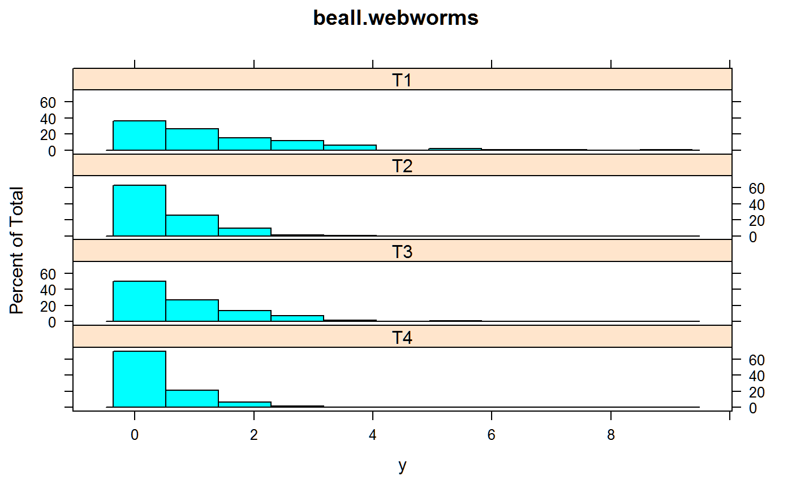
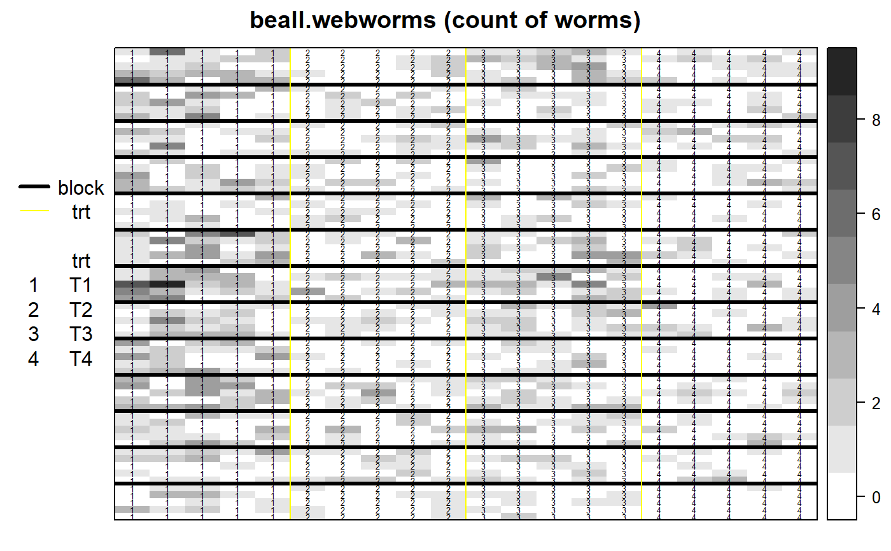

beall.webworms.RdCounts of webworms in a beet field, with insecticide treatments.
data("beall.webworms")
A data frame with 1300 observations on the following 7 variables.
rowrow
colcolumn
ycount of webworms
blockblock
trttreatment
sprayspray treatment yes/no
leadlead treatment yes/no
The beet webworm lays egg masses as small as 1 egg, seldom exceeding 5 eggs. The larvae can move freely, but usually mature on the plant on which they hatch.
Each plot contained 25 unit areas, each 1 row by 3 feet long. The row width is 22 inches. The arrangement of plots within the blocks seems certain, but the arrangement of the blocks/treatments is not certain, since the authors say "since the plots were 5 units long and 5 wide it is only practicable to combine them into groups of 5 in one direction or the other".
Treatment 1 = None. Treatment 2 = Contact spray. Treatment 3 = Lead arsenate. Treatment 4 = Both spray, lead arsenate.
Beall, Geoffrey (1940). The fit and significance of contagious distributions when applied to observations on larval insects. Ecology, 21, 460-474. Table 6. http://doi.org/10.2307/1930285
Michal Kosma et al. (2019). Over-dispersed count data in crop and agronomy research. Journal of Agronomy and Crop Science. http://doi.org/10.1111/jac.12333
# \dontrun{ library(agridat) data(beall.webworms) dat <- beall.webworms # Match Beall table 1 # with(dat, table(y,trt)) libs(lattice) histogram(~y|trt, data=dat, layout=c(1,4), as.table=TRUE, main="beall.webworms")# Visualize Beall table 6. Block effects may exist, but barely. libs(desplot) grays <- colorRampPalette(c("white","#252525")) desplot(dat, y ~ col*row, col.regions=grays(10), at=0:10-0.5, out1=block, out2=trt, num=trt, flip=TRUE, # aspect unknown main="beall.webworms (count of worms)")# Following plot suggests interaction is needed # with(dat, interaction.plot(spray, lead, y)) # Try the models of Kosma et al, Table 1. # Poisson model m1 <- glm(y ~ block + spray*lead, data=dat, family="poisson") logLik(m1) # -1497.719 (df=16)#> 'log Lik.' -1497.719 (df=16)# Negative binomial model # libs(MASS) # m2 <- glm.nb(y ~ block + spray*lead, data=dat) # logLik(m2) # -1478.341 (df=17) # # Conway=Maxwell-Poisson model (takes several minutes) # libs(spaMM) # # estimate nu parameter # m3 <- fitme(y ~ block + spray*lead, data=dat, family = COMPoisson()) # logLik(m3) # -1475.999 # # Kosma logLik(m3)=-1717 seems too big. Typo? Different model? # }